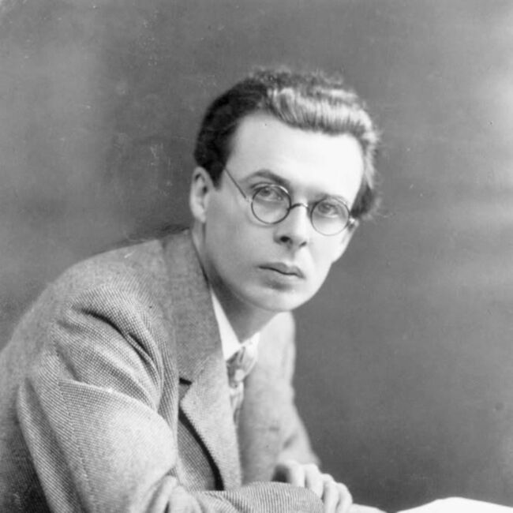

BRAVE NEW WORLD
REVIEW
This science fiction novel imagines a “utopia” where humans are not born but decanted in bottles, there are no families, and “everyone belongs to everyone else.” In the midst of this, two high class members of society, Bernard and Lenina, encounter someone known as a “savage” who has been raised outside of the new social norms (John). John struggles to enter the “civilized” society, and Bernard and Lenina get caught up in the ensuing chaos. What Brave New World gets right: Brave New World is a terrifying portrayal of what society could be like- and, in some ways, what it is like today. No one in the “civilized” societies can have any alone time or is allowed to feel anything but happiness and comfort. Relationships are forbidden, and there is no concept of love.
This book inspires lots of thought-provoking discussion even to this day and is often compared with George Orwell’s 1984. Topics like scientific advancement, philosophy, religion, and biology are all explored in Brave New World. What Brave New World gets wrong: While Aldous Huxley was certainly a great writer and thinker, he was not the most progressive when it comes to his portrayals of women characters. While the many male characters in Brave New World are diving deep into their spiritual lives and discovering new ways of living, Lenina is portrayed as infantile and happy that way. Still, Lenina plays an important role in the book, and I’d argue that she is the most interesting and sympathetic character due to how she is treated.
QUOTES
“... Most men and women will grow up to love their servitude and will never dream of revolution.”
“Actual happiness always looks pretty squalid in comparison with the overcompensations for misery. And, of course, stability isn’t nearly so spectacular as instability. And being contented has none of the glamour of a good fight against misfortune, none of the picturesqueness of a struggle with temptation, or a fatal overthrow by passion or doubt. Happiness is never grand.”
- Aldous Huxley
Author
Born into the prominent Huxley family, he graduated from Balliol College, Oxford, with an undergraduate degree in English literature. Early in his career, he published short stories and poetry and edited the literary magazine Oxford Poetry, before going on to publish travel writing, satire, and screenplays. He spent the latter part of his life in the United States, living in Los Angeles from 1937 until his death.[7] By the end of his life, Huxley was widely acknowledged as one of the foremost intellectuals of his time.